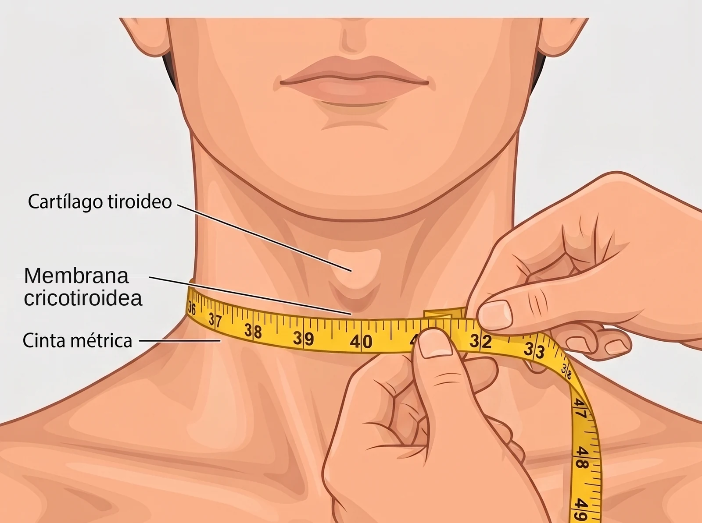

Nota técnica · Exploración
Perímetro cervical: técnica de medida
El perímetro cervical interviene en varias escalas de cribado de la apnea del sueño, siempre como un umbral binario. Medirlo de forma consistente importa más que medirlo con exactitud milimétrica.

Cómo se mide
Cuatro pasos. El primero es el que más variabilidad introduce.
-
Referencia anatómica
Membrana cricotiroidea, entre el borde inferior del cartílago tiroides y el borde superior del cricoides. Se localiza descendiendo con el dedo desde la prominencia laríngea hasta notar la depresión blanda que precede al anillo cricoideo. Es la referencia que emplea convencionalmente la literatura de sueño.
-
Posición del paciente
Sentado o de pie, hombros relajados, cabeza en posición neutra y mirada al frente, con respiración normal. Tanto la flexión como la extensión cervical modifican la medida, así que conviene comprobar la posición antes de rodear el cuello con la cinta.
-
Colocación de la cinta
Cinta inextensible, plana contra la piel y perpendicular al eje longitudinal del cuello. Debe contactar sin comprimir los tejidos blandos. El error más habitual es que la cinta quede oblicua y ascienda por detrás: conviene verificar la horizontalidad en la nuca, no solo por delante.
-
Lectura
Al final de una espiración normal, con aproximación de 0,1 cm. Si hay dudas sobre la colocación, se repite la medida en lugar de ajustar mentalmente el resultado.
Fuentes de error frecuentes
Las cuatro primeras son las que más desplazan el resultado.
- Cinta oblicua, más alta por detrás que por delante. Sobreestima.
- Comprimir el tejido blando al tensar la cinta. Infraestima.
- Cuello en flexión o extensión en lugar de posición neutra. Variable en ambos sentidos.
- Medir por debajo del cricoides, ya sobre la base del cuello. Sobreestima.
- Cuello de camisa, corbata, collar o cadena sin retirar, o pelo largo sin recoger.
- Barba muy densa: separar el pelo hasta contactar con la piel.
- Deglución durante la medida: el ascenso laríngeo desplaza la cinta.
- Bocio o masa cervical: la medida deja de reflejar adiposidad cervical. Conviene anotarlo junto al valor e interpretar la escala con esa reserva.
El umbral pertenece a la escala, no al paciente
Cada instrumento fija su propio punto de corte, derivado de su propia población.
| Instrumento | Umbral | Diferenciación por sexo |
|---|---|---|
| Puntuación NoSAS | > 40 cm (4 puntos) | No, umbral único |
| Antropometría en AOS | > 40 cm (señal de alerta) | No |
Consistencia antes que exactitud
Ninguna medida antropométrica es exacta, y las escalas que usan el perímetro cervical se derivaron a partir de medidas tomadas en condiciones reales, con toda su variabilidad ya incorporada en el rendimiento que publican. Perseguir el milímetro no mejora el cribado.
Lo que sí conviene es medir siempre igual. En el seguimiento de un mismo paciente, una diferencia de uno o dos centímetros entre visitas puede deberse por completo a la técnica y no a un cambio real. Fijar un procedimiento y repetirlo es lo que hace comparables las medidas propias.
Calculadoras que usan esta medida
Ambas aplican el umbral de 40 cm.